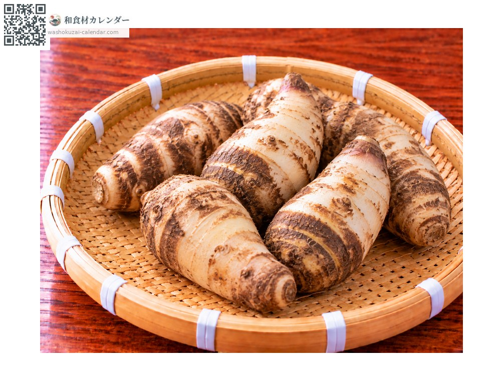
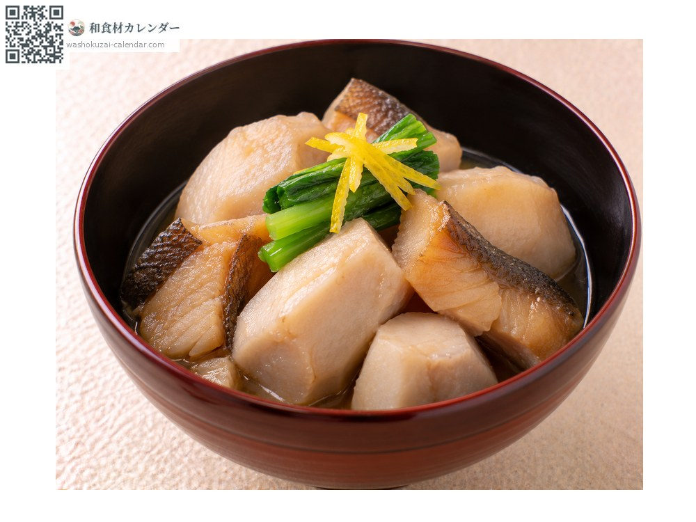
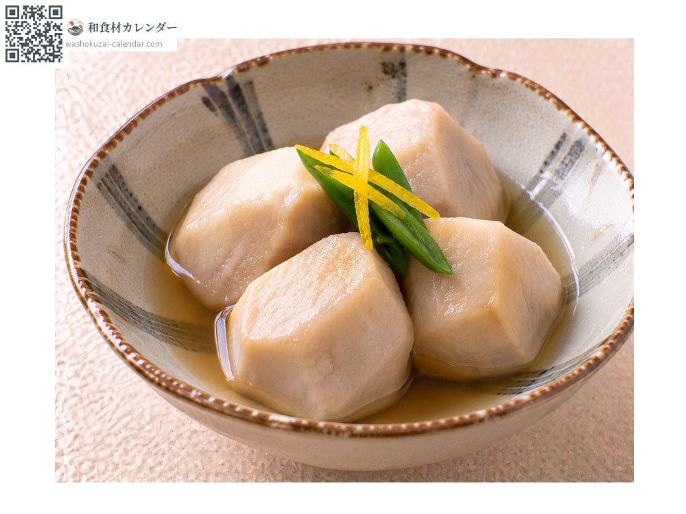
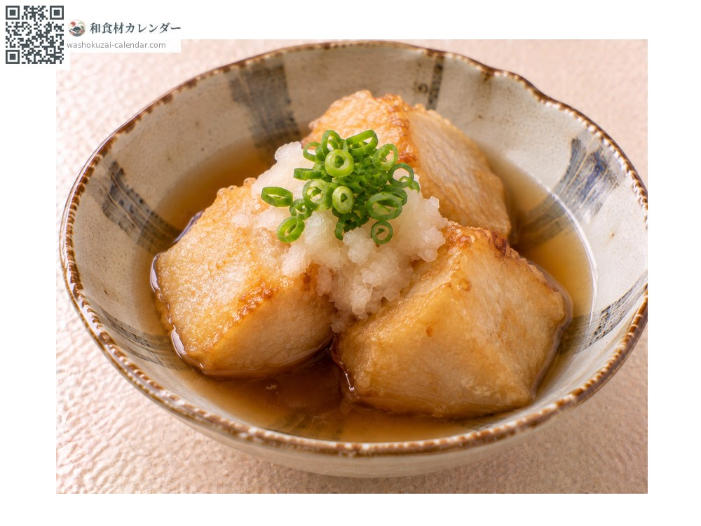
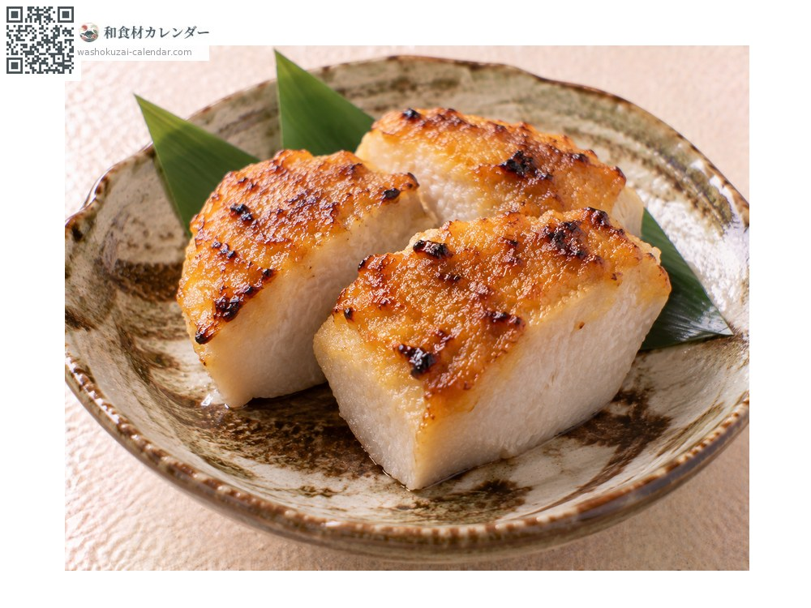

Ebi-imo taro
海老芋 えびいも
At its best in Jan, Feb, Nov, Dec

When it is at its best
In seasonAvailable
How to cook

Imobo
Simmered together with dried cod. A traditional Kyoto dish.

Fukume-ni
Gently simmered in dashi; it holds its shape and takes up flavour.

Agedashi
Deep-fried plain and served in dashi; fragrant outside and dense within.

Dengaku
Steamed and spread with miso, which suits its dense texture.
How to choose
Clear banding and a pronounced curve, and heavy in the hand.
Storage
Wrap in newspaper with the soil still on and keep somewhere cool and dark. Sensitive to cold, so do not refrigerate.
Main areas
Good to know
A kind of taro, named for a curve and banding that suggest a prawn. Shaping it takes repeated mounding of soil, which makes it a labour-intensive Kyoto vegetable. It holds together in the pot and eats densely; simmered with dried cod as imobo, it is a fixture of Kyoto cooking.
At their best around the same time
 Butterbur sprout
Butterbur sprout Rapeseed blossom
Rapeseed blossom Japanese parsley
Japanese parsley Cabbage
Cabbage Napa cabbage
Napa cabbage Brussels sprouts
Brussels sprouts Broccoli
Broccoli Cauliflower
Cauliflower